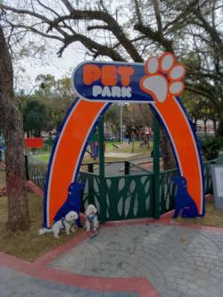
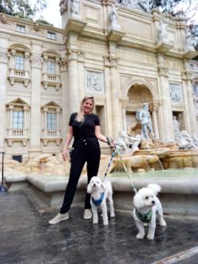
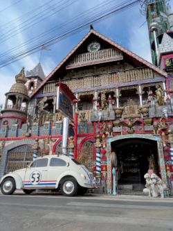
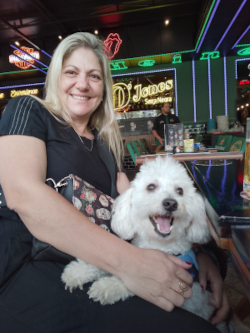

Serra Negra - SP
Agosto/2023

|
Serra Negra foi elevada a cidade em 7 de setembro de 1859, porém foi fundada em 23 de setembro de 1828, por Lourenço Franco de Oliveira, data, também, em que foi feita a concessão de Capela Curada a Serra Negra. Por este motivo, seu aniversário é comemorado a em 23 de setembro – data da fundação. Possui uma área de 203,010 km. estando a uma altitude de 925 metros. População: 29452 habitantes (2020). Rodeada por montanhas da Serra da Mantiqueira, a vegetação é exuberante, compondo um cenário de extraordinária beleza natural em meio ao Circuito das Águas Paulista. Além de encantadora, Serra Negra é uma cidade extremamente Pet Friendly. A maioria dos estabelecimentos aceita pets e os recebem muito bem. Optamos em ficar numa linda e aconchegante casa, onde fomos super bem recebidos. Adoramos passear pelas cidades e Serra Negra nos proporcionou passeios incríveis. |
 Praça Sesquicentenário
Praça Sesquicentenário Cristo Redentor Serra Negra
Cristo Redentor Serra Negra Cristo Redentor Serra Negra
Cristo Redentor Serra Negra Parque Teleferico
Parque Teleferico- Pet Park
 Praça Fórum
Praça Fórum Rua Principal
Rua Principal- Fontana Di Trevi
- Disneylândia dos Robôs
 Rancho
Rancho Chopp 40
Chopp 40- D' Jones